Bay 24 – The Shoemakers’ Window (also known as the Life of the Virgin Window or the Infancy of Christ Window)
This stained glass window is located in the north ambulatory of Chartres Cathedral.
It was commissioned by the Shoemakers’ Guild and presents a richly detailed visual narrative of the lives of Joachim, Anne, the Virgin Mary, and Christ.
Read from bottom to top, the panels follow a theological and symbolic structure more than strict chronology,
highlighting the birth, flight, miracles, and glorification of Christ and Mary.
Sources consulted:
- Corpus Vitrearum
- Madeline Caviness and Louis Grodecki’s scholarship on Chartres Cathedral stained glass
- Jane Welch Wilson, Windows on the World
- Yves Delaporte’s iconographic analysis of Chartres programs
- General layout patterns of narrative windows in the north ambulatory
| 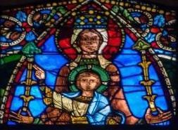 Virgin and Christ in Majesty The glorified Virgin is crowned and enthroned beside Christ in heaven. | ||
| 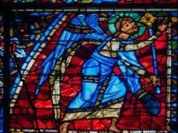 Angels in Adoration Angels herald and adore the Virgin and Christ in glory. | 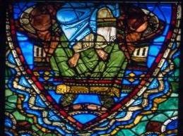 Virgin and Christ in Majesty (Lower) Lower portion of the enthroned Christ and Mary, radiant in divine glory. | 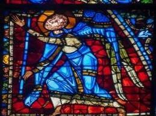 Angels in Adoration Angels herald and adore the Virgin and Christ in glory. |
| 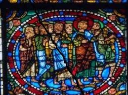 Christ Approaches Jerusalem Jesus leads his disciples toward the Holy City, followed by his devoted followers. | 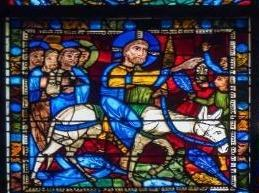 Entry into Jerusalem Jesus rides into the city on a donkey as the crowd greets him with joy. | 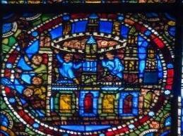 Christ in the Temple Jesus enters the Temple as people watch and prepare for his arrival. |
| 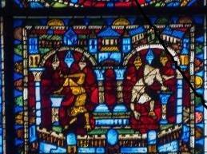 Fall of the Idols Pagan statues collapse as the Christ child enters Egypt. | 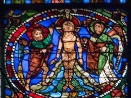 Assumption of the Virgin Mary is taken up into heaven, accompanied by angels. | 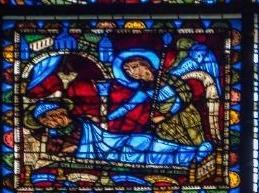 Dormition of the Virgin An angel visits Mary at the hour of her death. |
| 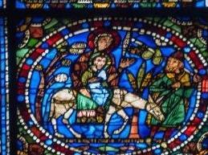 Flight into Egypt Mary and the Christ child flee into Egypt, led by Joseph through the wilderness. | 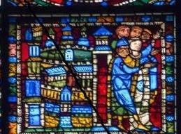 Arrival in Egypt The Holy Family arrives in Egypt and finds refuge. | 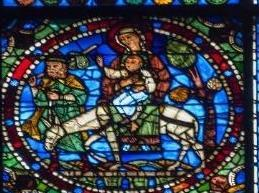 Return from Egypt The Holy Family journeys back to Judea after Herod’s death. |
| 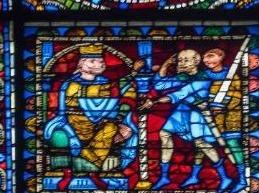 Herod Commands the Massacre King Herod orders the killing of all infant boys in Bethlehem. | 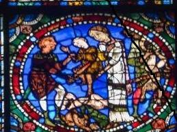 Massacre of the Innocents I Soldiers seize children as families struggle to resist. | 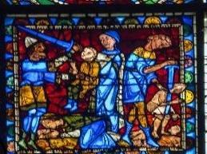 Massacre of the Innocents II Infants are slain by Herod’s soldiers during the brutal attack. |
| 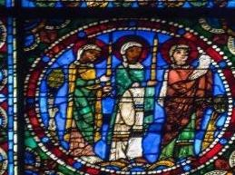 Presentation in the Temple Jesus is brought to the temple, greeted by Simeon and Anna holding signs of recognition. | 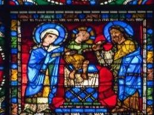 Jesus Among the Doctors The young Christ teaches in the temple, astonishing the elders with his wisdom. | 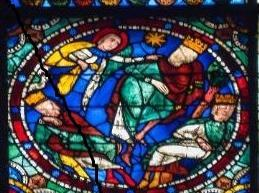 The Dream of the Magi Warned by an angel, the kings are told not to return to Herod and depart another way. |
| 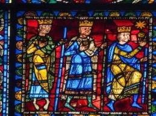 The Magi on the Road The three kings continue traveling toward Bethlehem. | 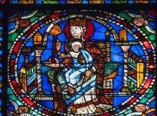 Adoration of the Magi The kings arrive and offer gifts to the infant Jesus. | 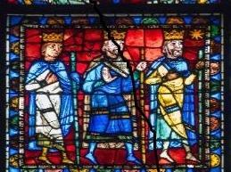 The Return of the Magi The wise men leave Bethlehem to return by another route. |
| 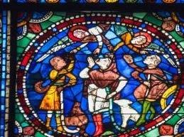 Annunciation to the Shepherds Angels appear in the sky to proclaim Christ’s birth to humble shepherds. | 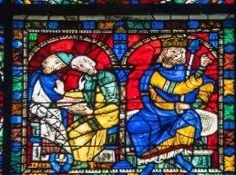 The Magi Before Herod The wise men consult with Herod before continuing their journey to find the Christ child. | 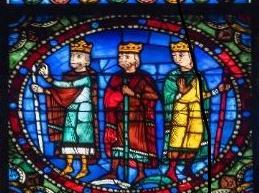 The Journey of the Magi The three kings prepare for or continue their journey following the star. |
| 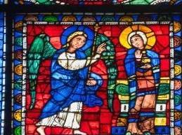 Angel Appears to Joachim Joachim in exile is visited by an angel announcing Anne’s conception. | 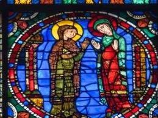 Joachim and Anne Reunited Joachim returns from exile and is greeted by Anne. | 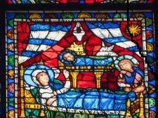 Nativity of Mary Anne rests after giving birth; attendants care for Mary, under a guiding star. |